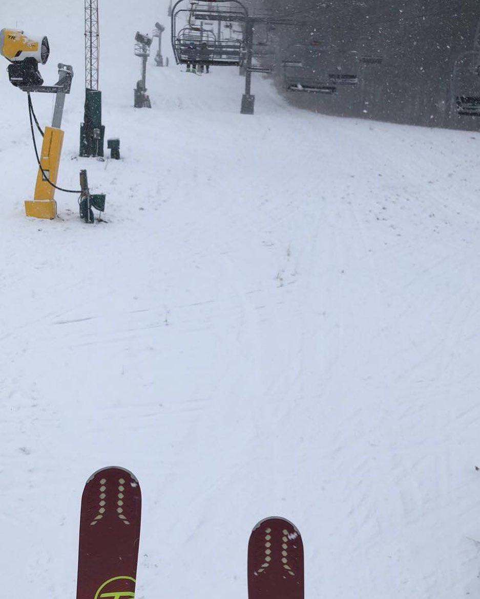

I started skiing when I was only 4 years old when my dad first threw me down the mountain, figuratively speaking. But ever since then I have gone every year since. Skiing is a sport that can get dangerous and that is where some of the excitement comes from. You can speed down a cliff and then you stop really quickly to ride up the lift and do it again on a different slope. But recently I have been taking to the terrain park as well. Learning how to do tricks and grinds has been a new challenge that I haven’t had yet while enjoying myself on the mountain. But that’s why I think it’s so great, there is a little something for everyone to try and you can have fun riding down with friends spraying each other with snow while you do it.
